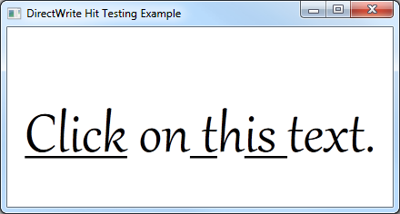

Provides a short tutorial about how to add hit testing to a DirectWrite application that displays text by using the IDWriteTextLayout interface.
The result of this tutorial is an application that underlines the character that is clicked on by the left mouse button, as shown in the following screen shot.

This how to contains the following parts:
To begin, you will need an application that uses an IDWriteTextLayout object. If you already have an application that displays text with a text layout, go to Step 2.
To add a text layout you must do the following:
Declare a pointer to an IDWriteTextLayout interface as a member of the class.
IDWriteTextLayout* pTextLayout_;
At the end of the CreateDeviceIndependentResources method, create an IDWriteTextLayout interface object by calling the CreateTextLayout method.
// Create a text layout using the text format.
if (SUCCEEDED(hr))
{
RECT rect;
GetClientRect(hwnd_, &rect);
float width = rect.right / dpiScaleX_;
float height = rect.bottom / dpiScaleY_;
hr = pDWriteFactory_->CreateTextLayout(
wszText_, // The string to be laid out and formatted.
cTextLength_, // The length of the string.
pTextFormat_, // The text format to apply to the string (contains font information, etc).
width, // The width of the layout box.
height, // The height of the layout box.
&pTextLayout_ // The IDWriteTextLayout interface pointer.
);
}
Then, you must change the call to the ID2D1RenderTarget::DrawText method to ID2D1RenderTarget::DrawTextLayout as shown in the following code.
pRT_->DrawTextLayout(
origin,
pTextLayout_,
pBlackBrush_
);
Now add a method to the class that will use the hit testing functionality of the text layout.
Declare an OnClick method in the class header file.
void OnClick(
UINT x,
UINT y
);
Define an OnClick method in the class implementation file.
void DemoApp::OnClick(UINT x, UINT y)
{
}
To determine where the user has clicked the text layout we will use the IDWriteTextLayout::HitTestPoint method.
Add the following to the OnClick method that you defined in Step 2.
Declare the variables we will pass as parameters to the method.
DWRITE_HIT_TEST_METRICS hitTestMetrics;
BOOL isTrailingHit;
BOOL isInside;
The HitTestPoint method outputs the following parameters.
| Variable | Description |
|---|---|
| hitTestMetrics | The geometry fully enclosing the hit-test location. |
| isInside | Indicates whether the hit-test location is inside the text string or not. When FALSE, the position nearest the text's edge is returned. |
| isTrailingHit | Indicates whether the hit-test location is at the leading or the trailing side of the character. |
Call the HitTestPoint method of the IDWriteTextLayout object.
pTextLayout_->HitTestPoint(
(FLOAT)x,
(FLOAT)y,
&isTrailingHit,
&isInside,
&hitTestMetrics
);
The code in this example passes the x and y variables for the position without any modification. This can be done in this example because the text layout is the same size as the window and originates in the upper-left corner of the window. If this was not the case, you would have to determine the coordinates in relation to the origin of the text layout.
Add the following to the OnClick you defined in Step 2, after the call to the HitTestPoint method.
if (isInside == TRUE)
{
BOOL underline;
pTextLayout_->GetUnderline(hitTestMetrics.textPosition, &underline);
DWRITE_TEXT_RANGE textRange = {hitTestMetrics.textPosition, 1};
pTextLayout_->SetUnderline(!underline, textRange);
}
This code does the following.
Checks if the hit-test point was inside the text using the isInside variable.
The textPosition member of the hitTestMetrics structure contains the zero-based index of the character clicked.
Gets the underline for this character by passing this value to the IDWriteTextLayout::GetUnderline method.
Declares a DWRITE_TEXT_RANGE variable with the start position set to hitTestMetrics.textPosition and a length of 1.
Toggles the underline by using the IDWriteTextLayout::SetUnderline method.
After setting the underline, redraw the text by calling the DrawD2DContent method of the class.
DrawD2DContent();
Finally, add the WM_LBUTTONDOWN message to the message handler for your application and call the OnClick method of the class.
case WM_LBUTTONDOWN:
{
int x = GET_X_LPARAM(lParam);
int y = GET_Y_LPARAM(lParam);
pDemoApp->OnClick(x, y);
}
break;
GET_X_LPARAM and GET_X_LPARAM macros are declared in the windowsx.h header file. They easily retrieve the x and y position of the mouse click.